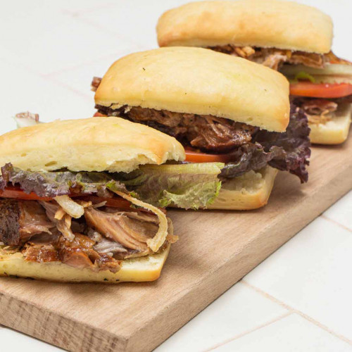

|  |
SANDWICH DE BONDIOLA DESMECHADA
Preparación:
- Mezclar en un bowl los ajos picados finos o hechos pasta y el resto de los ingredientes.
- Colocar la bondiola en una fuente y cubrir con toda la salsa, "masajear" para cubrir bien toda la carne.
- Marinar por unas 4 horas o durante la noche, siempre en heladera.
- En una fuente para horno, colocar la cebolla cortada en cubos grandes, apoyar la carne encima y agregar el agua y la cerveza.
- Cubrir con papel aluminio y hornear durante un mínimo de 2 horas a temperatura baja (120ºC).
Ingredientes:
| Cantidad |
Producto |
| 1 unid. |
Bondiola de cerdo |
| 1 unid. |
Cebolla |
| 300 cc. |
Agua |
| 1 Cda. |
Pimienta Negra Molida |
| 1 Cda. |
Pimentón Dulce |
| 2 Cditas. |
Ají Molido |
| 1 Cda. |
Orégano |
| 1 Cda. |
Comino |
| 50 g. |
Azúcar negra |
| 20 g. |
Extracto de Tomate |
| 2 Cditas. |
Mostaza en grano |
| 1 Cdita. |
Sal |
| 100 cc. |
Cerveza negra |
| 3 dientes. |
Ajo |
A tener en cuenta:
- Tiempo de elaboración 2 horas.
- Rinde 8 porciones.
- Costo aproximado $12.500
|